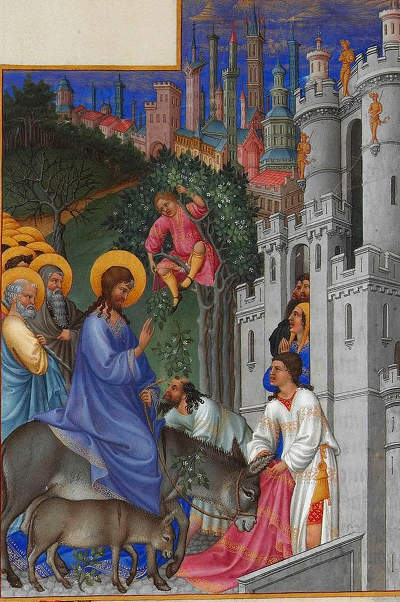

La Semana Santa es la conmemoración cristiana anual de la pasión de Cristo, es decir, de la entrada a Jerusalén, la última cena, el viacrucis, la muerte y resurrección de Jesús de Nazaret. Comienza el Domingo de Ramos y finaliza el Domingo de Resurrección. Aunque su celebración suele iniciarse en varios lugares el viernes anterior, es decir, el Viernes de Dolores. La fecha de la celebración es variable: entre mediados de marzo y abril.
Sigue siendo Cuaresma hasta el atardecer del Jueves Santo, cuando da comienzo el Triduo Pascual: ese mismo día se celebra la institución de la Eucaristía en la última cena; el Viernes Santo, la crucifixión y muerte del Señor, y la noche del Sábado Santo, la Vigilia Pascual. Durante la Semana Santa tienen lugar numerosas muestras de religiosidad popular a lo largo de todo el mundo destacando las procesiones, penitencias y las representaciones de la Pasión, muerte y resurrección de Jesús.
En algunos países se ha tomado como días de asueto, lo que también le ha valido la denominación de Semana De Dios.

Es un libro litúrgico donde aparece toda la liturgia de la Semana Santa como es: Domingo de Ramos, Lunes, Martes y Miércoles Santo; y donde aparece el triduo pascual que comienza el Jueves Santo con la Santa Cena del Señor. Continúa con el Viernes Santo donde se celebra la pasión y muerte del Señor, el Sábado de Gloria que es el último día de este triduo pascual y el domingo de resurrección para celebrar que Jesús ha resucitado.